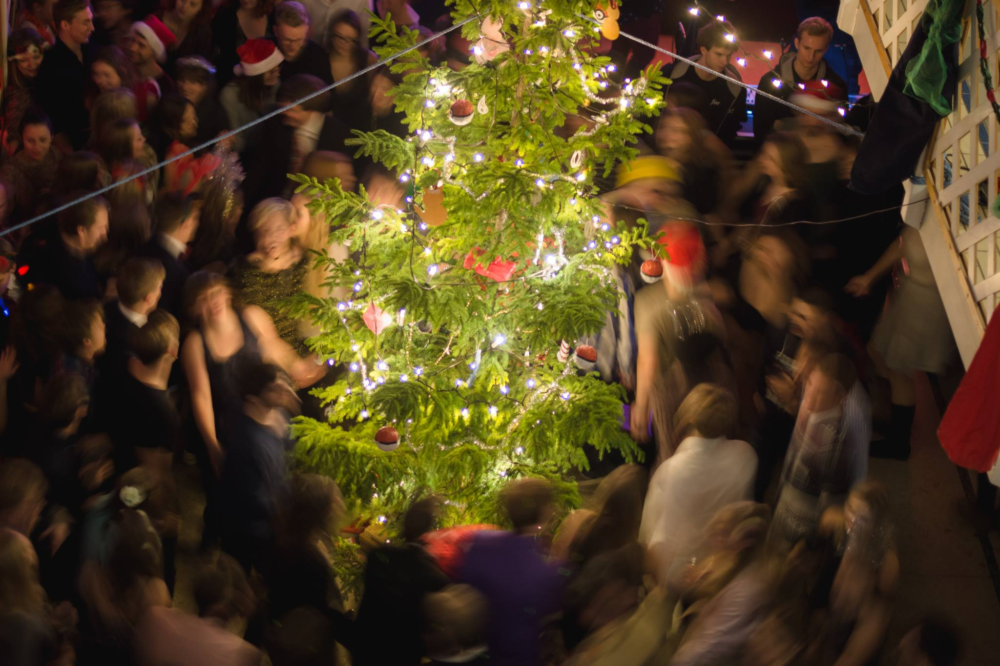
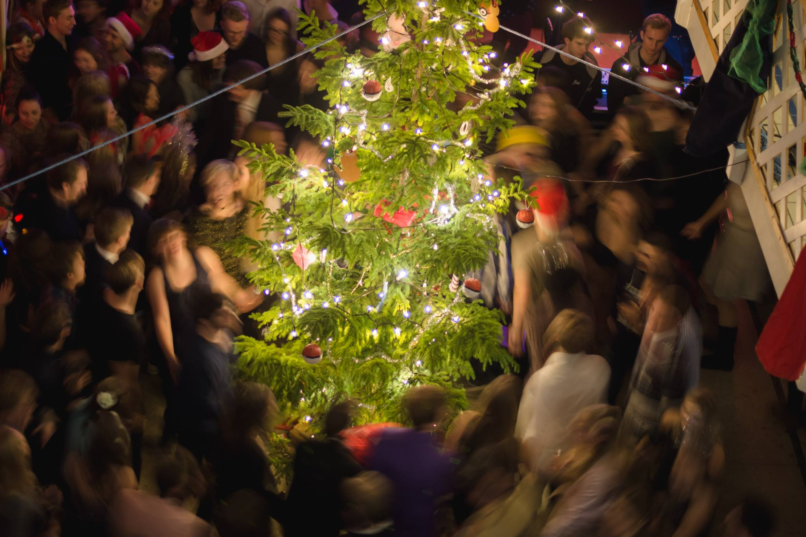

Tagga Luciafesten !
 Luciageneralerna har ordet
Luciageneralerna har ordet 
Varmt välkomna till Luciafesten, i vår mening årets mysigaste fest. Den nionde december svidas Kårallen om till julstass, komplett med dekor på alla våningsplan och en fyra meter hög julgran i Baljan. Runt om i huset kommer ett antal Kul Små Grejer™ finnas utplacerade. Exempelvis Tuba Hero, ett Guitar Hero spel du styr med en tuba, och vårt mystiska fotobås.
Kvällen inleds med en julsittning i Gasquen innan själva festen öppnar vid åtta. Kvällen kommer att vara fylld av musik och vi presenterar stolt inte mindre än fem live-akter: Lusen Big Band, LiU-bandet, LiTHe Blås, Helmut Jederknüller mit seinem Super Stereo à Gogo Orchester samt D-bandet. Som om inte det vore nog kan man dessutom som festbesökare själv bidra till musiken tillsammans med vårt Harakiri-band, karaoke ackompanjerat av vårt skickliga liveband.
Andra stämningshöjande inslag är temabarer, luciatåg, dans runt granen och julklappsbyte. För att hinna uppleva allt som händer rekommenderar vi stark att ni kommer tidigt till festen för att inte missa något. Så lämna ovven hemma, ta på dig din finaste julutstyrsel (kom i klänning/kavaj eller varför inte som snöflinga, julgranskula eller luciakrona) och kom till Kårallen den 9/12 för en fest du sent kommer att glömma.
Luciageneralerna
Gustav, Tova och Sofia
 Om festen
Om festenKlädsel: Fin eller finurlig
Luciafesten är Kårallens juligaste fest, vilket syns på all dekor och den stora julgranen i Baljan. Vi vill att hela festen ska kännas julig så ovven lämnas hemma och ta istället på dig en jultröja eller något annat fint eller finurligt, var kreativ!
Paketbyte
Ta med dig en julklapp och få en! Lämna in ett paket när du kommer till festen och ta med dig ett när du går hem. Värde på paketet ska vara ca 20 kr.
KSG - Kul Små Grejer™
Här och var i Kårallen (och på tredje plan!) kommer det finnas KSG, kul små grejer! Utforska dessa roliga saker tillsammans med dina vänner.
Harakiri - Musikalist självmord
LiTHe blås har ett alldeles eget liveband under Luciafesten! Här kan man sjunga karaoke till välkända låtar. Det är till Gasquen man rör sig för att lyssna på skön sång och härlig musik!
Sittning
Innan festen kommer det erbjudas en julsittning. Det kommer serveras härlig julmat och trevlig stämning utlovas!
Annat roligt
Under kvällen kommer det även bli dans runt granen och luciatåg.
 Schema
Schema17:30 - Fördrink till sittningsgästerna serveras
20:00 - Kårallens dörrar öppnar
21:00 - Lusen Big Band spelar i Baljan
21:30 - Harakiri spelar i Gasquen
22:15 - Jazz Gripen spelar i Baljan
23:30 - LiTHe Blås intar Baljan
00:00 - Dans runt granen och Luciatåg i Baljan
01:00 - Harakiri drar igång i Gasquen igen
01:01 - D-bandet spelar i Baljan
03:00 - Luciafesten är över för det här året
 Biljetter
BiljetterBiljetter köps online på länk till biljetterna
Biljettsläpp sker måndag 10 december ca 12.30, efter vår spelning i Collo! Kom dit för att se exakt när biljetterna släpps!
Priser
Sittningsbiljett + festbiljett 350 kr (märke ingår)
Sittningsbiljett + festbiljett alkoholfritt 310 kr (märke ingår)
Festbiljett 130 kr
Märke 20 kr
Köp biljett! Temabarer
TemabarerAmigo
Peo, Peo, Peo! Fem, fem, fem! I Amigo tar vi oss Tillbaka till Vintergatan och kom ihåg att allt kan hända i rymden!
Nano
I Nano kan du köpa shots och drinkar i regnbågens alla färger! Nyan cat?
Baljan
Nostalgi är temat i Baljan. Hur var det förr i blåset? Här dyker det kanske upp ett och annat gammalt KSG. Var allt bättre förr?
Gasquen
Börjar magen kurra är det till Gasquen du ska bege dig för att köpa en jultallrik som du kan avnjuta medan du lyssnar på vårt live-karaokeband.
Lusen Big Band
Linköpings Universitets egna storband drar igång festen i Baljan.
Jazz Gripen
Ett nystartat jazzband som kommer sprida härlig musik i Baljan under kvällen.
Lithe Blås
Självklart kommer vi själva bjuda er på en spelning! Innan midnatt dundrar vi fram och kommer bjuda på en halvtimmes konsert med några av våra bästa låtar tillsammans med en och annan jullåt. Baletten kommer dansa, folk kommer gyckla, skitsnacka och vi kommer sprida en massa härlig musik!
D-Bandet
Datasektionens band som spelar covers med fart och energi!
Känner du att julstämningen på festen var underbar och vill få med dig en del av det hem? Efter att du festat klart kan du köpa med dig en gran! Eller hittade du någon dekor som du tyckte extra mycket om? Den är också till salu efter att festen är slut! Lämna ett bud och granen eller dekoren kan bli din!
 Bilder från förr
Bilder från förr 



 Vilka är
Vilka är Vi är studentorkestern LiTHe Blås som spridit musik runt om i Linköping med omnejd sedan 1973. Du har förmodligen sett och hört oss när vi dundrat fram i våra gula och blåa rockar, skramlat med alla medaljer och med tokiga hattar på huvudet. Disco eller dödsjazz, vi spelar det mesta och vi spelar när, var och hur som helst!
Varje år anordnar vi Luciafesten på Kårallen, en julig fest utöver det vanliga!
Vill du boka oss för en spelning eller själv vara med i vårt härliga gäng? Gå in på vår hemsida och läs mer! Till LiTHe Blås hemsida